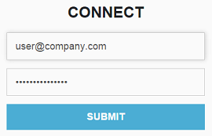
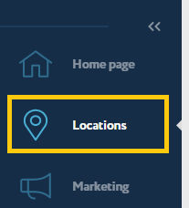
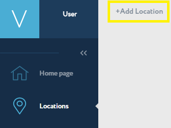
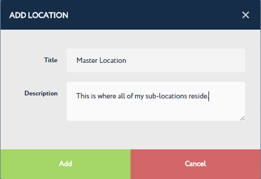

Create Locations¶
In the third step of getting started with Navigine Indoor Location Services, you need to use the Navigine Content Management System (CMS) to create locations.
Prior to measuring the map or filling it with objects, you need to set up the location in the Navigine CMS. See the following table for description of the steps on your way to creating a location.
Log into your Navigine user account.

To see more information about the available tabs in the Navigine CMS, extend the sidebar in the left part of the screen. This step is optional, so please extend the sidebar only if you find it convenient.
Switch to the Locations tab.

Click Add Location. The ADD LOCATION dialog should pop up.

In the ADD LOCATION dialog specify the name of the location and its description. Consider this location to be the whole building (master location), where you have sub-locations - floors and separate parts of the building.

Click ADD once you’ve filled in the information, or click Cancel if you need to go back.
Once you are done with creating locations, go to Create Sub-locations.